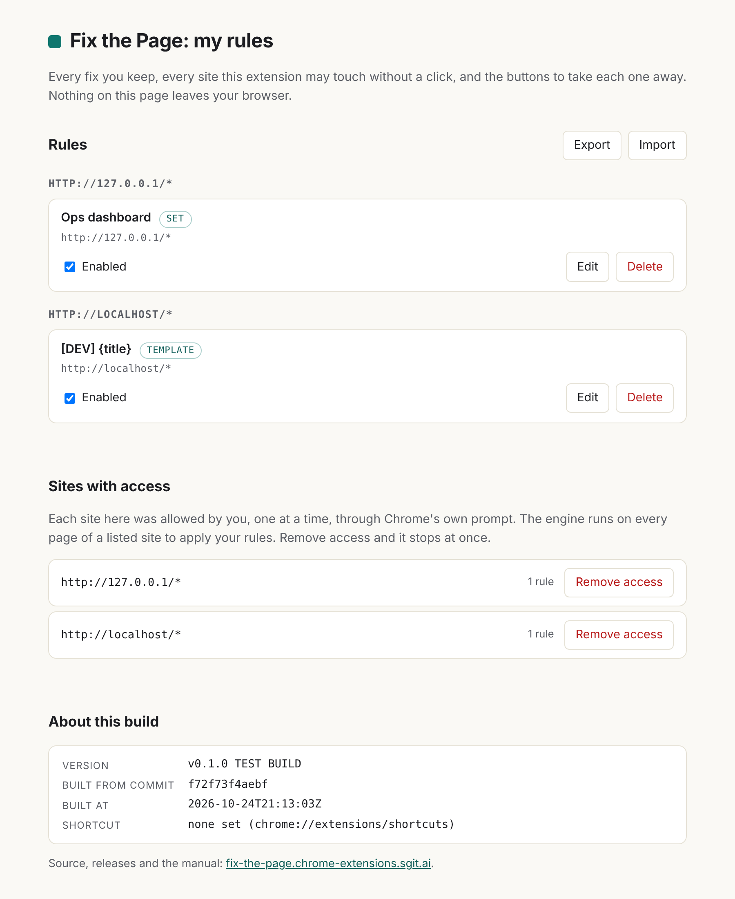

The title fix
Make a tab's title say what you want. In one of four ways, on this page now or on every page of a site, with a visible list of what you did and one click to undo it. This is the only fix in version 0.1. built
Four ways to change a title
Pick one in the popup's "How" selector. The preview line under it shows what the tab will say before you apply anything.
| Mode | What it does | You type | On a page titled "Inbox (3)" |
|---|---|---|---|
set | Replace the title | Work mail | Work mail |
prefix | Add your text before the page's own title | [A] | [A] Inbox (3) |
suffix | Add your text after it | · work | Inbox (3) · work |
template | Your text with {title}, {host} and {path} filled in | [PROD] {title} | [PROD] Inbox (3) |
template is the general form; the other three are shortcuts. In every mode but set, the fix follows the page: when the page changes its own title to "Inbox (4)", the tab says "[A] Inbox (4)".
On this page, now
Click the icon (or press Alt+Shift+T, or choose "Set this tab's title…" from the page's right-click menu). Type, pick a mode, Apply. The change is immediate and stays while you are on the page, even on a single-page app that rewrites its title on every route change: the engine watches the <title> element and puts your title back each time, without looping. Leave the page or reload it and the page has its own title again. Nothing was saved.
This route uses activeTab, so it reaches the tab's main page only: Chrome's documentation says the extension "temporarily gets host permissions for the tab's main frame origin". A title inside a cross-origin frame is out of reach, which is correct, since the tab shows the main page's title anyway.
On every page of a site
Tick Always on this site before you press Apply. Then:
- Chrome shows its own prompt, asking you to allow this one site. (Chrome's documentation: "Permissions must be requested from inside a user gesture, like a button's click handler." The Apply click is that gesture.)
- If you agree, the rule is saved, and the engine is registered to run on that site's pages at load. It applies your rules there on every visit, with no further clicks, and across browser restarts.
- If you refuse, nothing is saved and nothing changes.
The rule is saved whether or not the page is open later; the site's access is what makes it run. Remove the access and the rule stays listed but does nothing until you grant access again.
Where a rule applies
The "Where" field holds a Chrome match pattern: scheme://host/path, where * stands for anything. The default is the whole site you are on, such as https://app.example.com/*. Narrow it to a part of a site with the path, or widen it with the host:
| Pattern | Matches |
|---|---|
https://app.example.com/* | Every page on that host, over https |
https://app.example.com/dashboard/* | Only pages under /dashboard/ |
https://app.example.com/*?tab=ops* | Pages whose query string starts with tab=ops (the path is matched together with the query) |
https://*.example.com/* | Every subdomain of example.com. Wider than one site, so the popup asks you to confirm, and Chrome asks for all of them |
*://example.com/* | http and https. Also wider than one origin |
The pattern must match the page you are on, or the popup refuses it: a rule you cannot see working is a rule you cannot check. Patterns are matched against many URLs in the test suite, not one, which is the hub's fourth silent failure ("a pattern written against one example") kept at bay.
Undo
Undo on this page, in the popup, gives the page its own title back and stops watching it. On the options page, disabling or deleting a rule does the same on every open page that had it. The engine keeps the page's latest own title, not a stale copy from when you first clicked, so what comes back is what the page would show now.
My rules

- Rules, grouped by site. Edit the title, the mode or the pattern. Enable or disable with the tick box. Delete, with a confirmation.
- Sites with access. Every origin you have allowed, from Chrome's own record of the extension's permissions. Remove access gives the permission back to Chrome and unregisters the engine for that site at once; it then offers to delete the site's rules too.
- Export writes every rule to a JSON file you save where you like. Import reads such a file back, replacing rules with the same id and adding the rest. A file that is not exactly the documented shape is refused whole, with a message saying which rule and which field, and nothing in it is ever executed.
- About this build: version, commit and build time, and the keyboard shortcut in force.
The export format
{
"format": "fix-the-page/rules",
"version": 1,
"exported": "2026-10-24T20:40:00Z",
"rules": [
{
"id": "r-2026-10-24-001",
"match": "https://app.example.com/dashboard/*",
"fix": "title",
"value": "Ops dashboard",
"mode": "set",
"created": "2026-10-24T20:40:00Z",
"enabled": true
}
]
}
A rule has exactly those seven fields. fix is the name of a bundled fix (only title in v0.1), mode one of the four above, value at most 500 characters. Anything else, including any field that looks like code, makes the file invalid. Rules are stored in chrome.storage.local, whose quota Chrome documents as 10 MB; a rule is about 200 bytes.
Pages it cannot touch
Chrome's own pages (chrome://), the Chrome Web Store, and pages that are not http or https. The popup says so, in words, rather than failing silently. Chrome's documentation: "Access is not granted to restricted pages, such as chrome:// pages", and in its own example a tab with no URL "is a restricted page".
Sites that publish a page API
The newsroom's pages publish a small JavaScript API at window.__tools.page, with list(), apply(), toggle() and reset() (see its api.json). The article's thesis is that sites should publish primitives and fixes should prefer them. In v0.1 the extension detects such an API and says so in the popup; it does not yet call it. Calling a site's own fixes by name is the first item on the roadmap. specified
What this release does not do
- Any fix other than the title.
- Sync rules between machines. Rules are in
chrome.storage.local, notsync; Chrome documents sync's quota as about 100 KB in total and 8 KB per item, and whether to use it is a later decision. - Change a title inside a cross-origin frame.
- Sign rules, or share rule packs.
- Run in Firefox or Safari, or come from the Chrome Web Store.